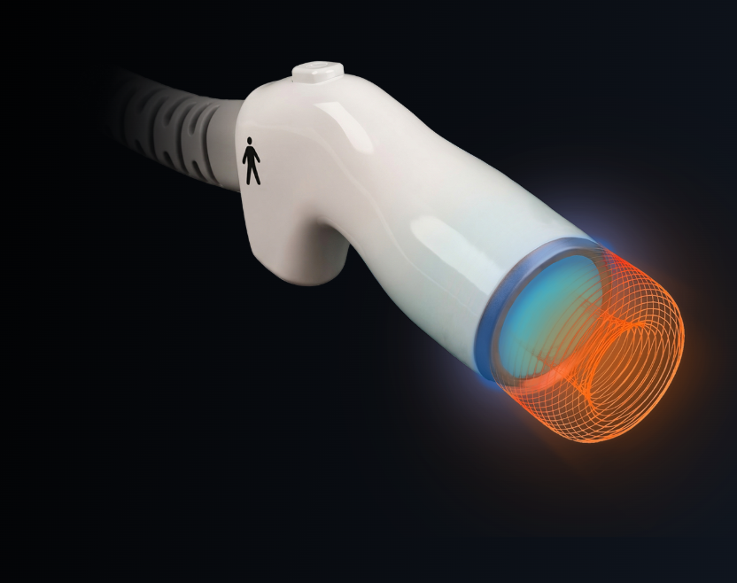

Scroll
피부 표면은 안전하게 보호하고,
필요한 깊이에는 정밀하게 에너지를 전달합니다.
파인웨이브는 피부 표면은 안전하게 보호하면서,
2.45GHz 극초단파 에너지를 타깃층에 전달하는 의료 장비입니다.


열 에너지는 정밀하게, 표면은 편안하게.
펠티어(Peltier)와 칠러(Chiller)를 결합한 FINECOOL 이중 냉각시스템은
장시간 고출력 시술에서도 보다 안정적이고 편안한 시술 환경을 제공합니다.
피부 속 깊은 곳까지,
파도처럼 부드럽게 그리고 정확하게.
피부에 닿았을 때만 작동하는 지능형 접촉 제어 시스템.
피부 접촉 시에만 전달되는 마이크로웨이브 에너지,
실시간 피드백 시스템으로 안정적이고 정밀한 출력 제어.


시술 부위와 목적에 따라 대·소 핸드피스를 선택합니다.
두 핸드피스 모두 FINECOOL™ 냉각과 FRCCS 접촉 제어를 지원합니다.

좁고 섬세한 부위를 위한 소형 핸드피스. 얼굴 윤곽과 턱라인을 정밀하게 케어합니다.

넓은 부위를 위한 대형 핸드피스. Rubbing 모드로 균일하고 효율적인 케어를 지원합니다.
※ 모든 표현은 의료광고 심의·인허가 범위 검수 후 확정 (단정적 효능 표현 배제한 안전 문구로 구성)
시술자와 운영 관점에서 필요한 것들을 함께 제공합니다.
장비 데모, 견적, 자료 요청 등 궁금한 점을 남겨주시면 담당자가 안내해 드립니다.